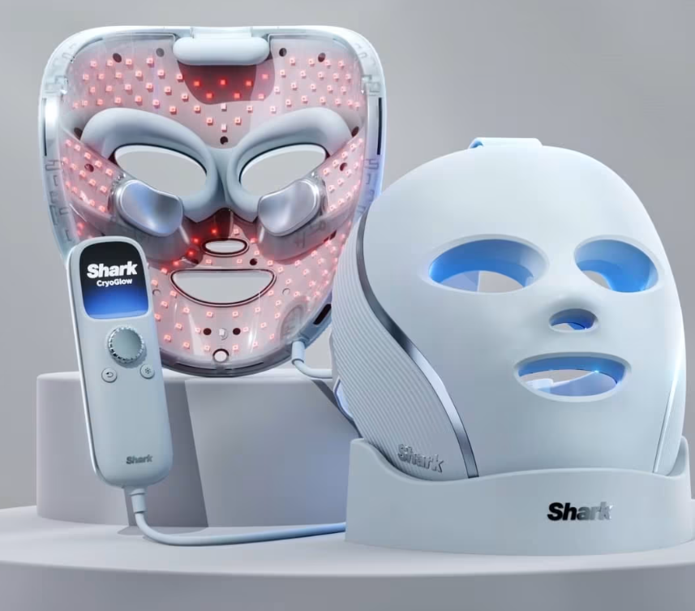

1. Photobiomodulation Therapy
Developed the first hydro-powered exfoliation system for consumer home use. This flagship product blends mechanical engineering, materials science, and human-centered design to deliver professional-grade skin results.

🔹 Objectives and Contributions
- Designed and validated fluidic pathways and pump control algorithms ensuring consistent hydro-exfoliation pressure and flow dynamics across skin types.
- Integrated multi-sensor feedback and firmware control loops for real-time safety and performance adjustments.
- Collaborated cross-functionally with industrial designers and regulatory teams to meet ISO and FDA consumer safety standards.
- validate on face heatmaps of dose
- spearheading clinical trials for claims
- baselining prototypes and competitors
- PID prototype creation for cooling pads
⚡ Technical Challenges
- 💡 Implemented custom CFD models to predict flow shear stress on skin during exfoliation cycles.
- 🔥 Developed calibration routines for micro-pump systems using Python-based test harnesses and DAQ integration.
- ⚙️ Overcame noise and vibration resonance in multi-speed motor control through PID tuning and vibration isolation design.
â Leadership & Accomplishments
- 🧠Led a 5-person R&D sub-team driving clinical validation and worked directly with external dermatological labs.
- 🤠Presented final product design and functional testing results to the CEO and executive leadership team.
- 🆠Delivered product from prototype to launch in under 9 months, now publicly available in U.S. and international markets.
Skills
Experimental Design & Data Analysis
MATLAB
Python
ImageJ/Fiji
Signal Processing
Statistical Modeling
Microscopy Instrumentation
🔗 Publications & Links
2. Hydradermabrasion Device
Developed the first hydro-powered exfoliation system for consumer home use. This flagship product blends mechanical engineering, materials science, and human-centered design to deliver professional-grade skin results.

🔹 General Summary
- Designed and validated fluidic pathways and pump control algorithms ensuring consistent hydro-exfoliation pressure and flow dynamics across skin types.
- Integrated multi-sensor feedback and firmware control loops for real-time safety and performance adjustments.
- Collaborated cross-functionally with industrial designers and regulatory teams to meet ISO and FDA consumer safety standards.
⚡ Technical Challenges
- 💡 Implemented custom CFD models to predict flow shear stress on skin during exfoliation cycles.
- 🔥 Developed calibration routines for micro-pump systems using Python-based test harnesses and DAQ integration.
- ⚙️ Overcame noise and vibration resonance in multi-speed motor control through PID tuning and vibration isolation design.
â Leadership & Accomplishments
- 🧠Led a 5-person R&D sub-team driving clinical validation and worked directly with external dermatological labs.
- 🤠Presented final product design and functional testing results to the CEO and executive leadership team.
- 🆠Delivered product from prototype to launch in under 9 months, now publicly available in U.S. and international markets.
Skills
Experimental Design & Data Analysis
MATLAB
Python
ImageJ/Fiji
Signal Processing
Statistical Modeling
Microscopy Instrumentation